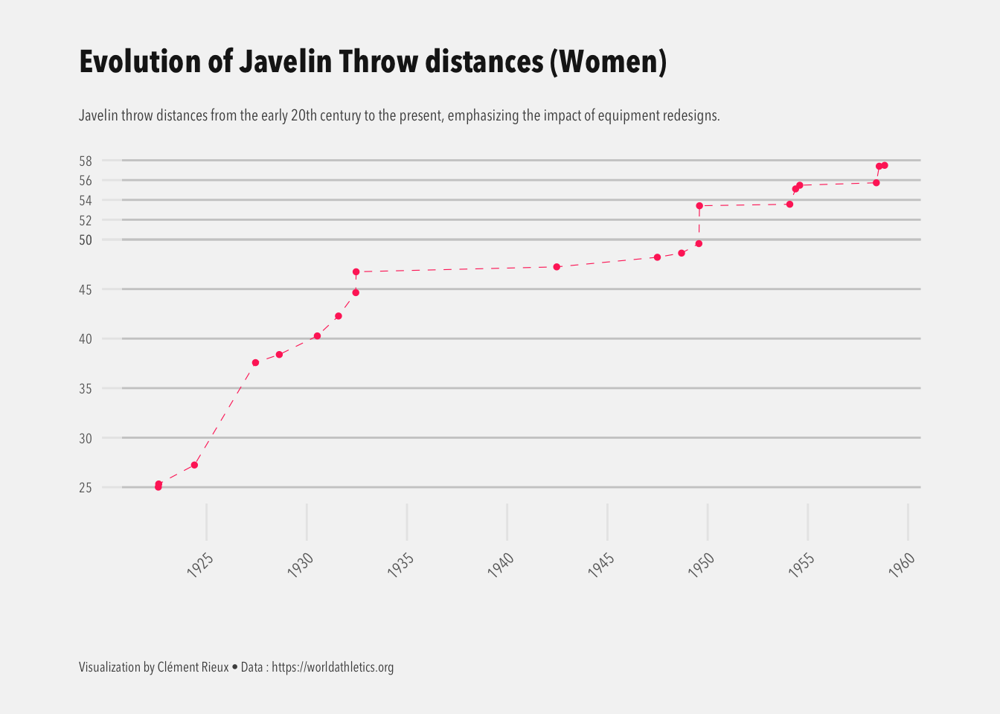

Evolution and history
The javelin has a storied history, dating back to ancient times when it was used as both a weapon and a tool for hunting. In modern athletics, the javelin became an official Olympic event in 1908 for men and 1932 for women, evolving significantly in design and regulation over the years.
Initially, the men’s javelin was standardized at a weight of 800 grams and a length of 2.6 meters. The women’s javelin, introduced later, weighs 600 grams and measures between 2.2 meters. These specifications have remained constant, but the center of gravity was adjusted in the 1980s for men and the 1990s for women to reduce excessively long throws that risked leaving the field of play. This change also improved safety and shifted the focus back to technique over pure power.
These adjustments have shaped the sport, creating a balance between athleticism, precision, and innovation.
Conclusion
The current javelin records : Jan Železný’s 98.48 meters and Barbora Špotáková’s 72.28 meters are remarkable feats, but as athletics evolves, these records may one day be challenged.
With advances in training, biomechanics, and technique, athletes are pushing the boundaries of the sport.
While breaking these records will require perfect conditions and exceptional performance, the possibility remains that they could be surpassed in the future. For now, they stand as incredible achievements, but the pursuit to surpass them is ongoing.